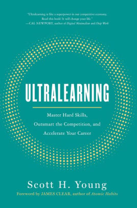

Blog Posts

My Journey
My two passions in life, music and technology, do not seem to have many similarities on the surface. But as I have been delving deeper into the world of coding, I have found that my skills I acquired while studying music transfer seamlessly to my coding projects.

Ultralearning
I found a fascinating book by Scott H. Young at my local library. It takes a deep dive into how we learn and retain information. This isn’t a new topic, of course, but this book emphasizes learning tough subjects by yourself, and in non traditional environments. As Mr. Young put it, “ultralearning is a strategy for aggressive, self-directed learning”.